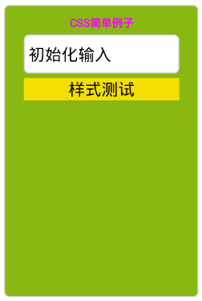
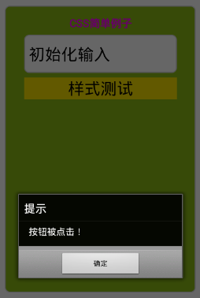
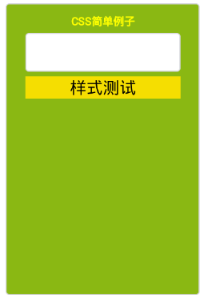

ERT客户端组件选择Lua作为脚本引擎，嵌入到页面中的Lua脚本会被ERT解析并执行，通过将Lua API和设备API以及EMP Native Lib API的绑定，开发人员可以通过编写Lua脚本实现本地逻辑。通过这些Lua API的定义和实现，开发人员可以通过编写脚本逻辑操作页面元素中的HTML和CSS元素；也可以通过API调用访问设备的本地功能，例如重力感应、摄像头、通信录、音频/视频播放等等。
在脚本中调用Lua方法必须使用":"，调用属性使用"."。
在报文中加载Lua脚本有两种方式：
<script type="text/x-lua">
//此处添加lua源代码。
</script>
<script type="text/x-lua" src="xxx"></script>
lua脚本的执行有两种方式：
function中的lua代码为初始化界面时执行代码，类似jsp界面中onload执行脚本。Lua解释器初始化时，会注册一些客户端自己的库函数，供Lua脚本调用。关于客户端API的介绍请参照EMP参考手册的以下章节:
此例为CSS样式章节中的示例一添加了lua脚本，使text输入框有初始输入值。代码中 init_fun 函数调用 setPropertyByName 函数改变输入框input1的value值，语句 init_fun("初始化输入"); 使init_fun函数在界面初始化时被执行。
<content>
<head>
<style>
.body {background-color: #FFFFFF;}
.div1 {background-color: #8AB813;left:60px; top:30px; height:300px; width:200px; font-size:17px;}
.label {color: #FF00FF;}
.label1 {top:10px; left:20px; font-weight: bold; font-size: 11px; width: 160px; text-align: center;}
.input1 {left:20px; width:160px; height:40px;}
.button1{left:20px; width:160px; background-color: #F5DE01;}
</style>
<script type="text/x-lua">
<![CDATA[
-- 初始化函数
local function init_fun(value)
--获取input1控件
local ctrl_input = document:getElementsByName("input1");
if ctrl_input and #ctrl_input > 0 then
--改变输入框的初始输入值
ctrl_input[1]:setPropertyByName("value",value);
else
window:alert("input1 控件不存在！");
end
end
--初始化执行
init_fun("初始化输入");
]]>
</script>
</head>
<body>
<div class="div1">
<label class="label1" name="label1">CSS简单例子</label><br/>
<input type="text" class="input1" name="input1"></input><br/>
<input type="button" class="button1" value="样式测试"></input>
</div>
</body>
</content>
运行效果图：

此例为上例中的button控件添加了onclick属性，使该按钮被点击时触发脚本函数的执行，此例中的脚本函数实现了弹出对话框的功能。
在上例的脚本中添加alertMsg函数，代码如下:
--点击事件的响应函数
function alertMsg()
window:alert("按钮被点击！");
end
修改body中button控件的报文如下：
<input type="button" class="button1" value="样式测试" onclick='alertMsg()'></input>
运行效果图(按钮被点击后)：

此例通过引用外部文件引入lua脚本。根据文档描述为此脚本需在客户端存在，我们暂时使用客户端提供的file:write()方法将要引入的脚本写入客户端。
以下为脚本写入的代码：
local fileContent =
[[
function changeStyle(name,style,value)
local ctrl = document:getElementsByName(name);
if ctrl and #ctrl > 0 then
for key,ctrl_atom in pairs(ctrl) do
ctrl_atom:setStyleByName(style,value);
end;
else
window:alert(name .. "控件不存在！");
end;
end;
]];
file.write("elements_public.lua",fileContent);
local exist = file:isExist("elements_public.lua");
if exist then
data = file:read("elements_public.lua","text");
else
window:alert("此文件写失败！");
end;
说明：
下面在界面报文中引用"elements_public.lua"文件，并调用其中的 changeStyle() 函数。此段代码实现了点击button按钮改变label控件的字体颜色的功能。
<content>
<head>
<style>
.body {background-color: #FFFFFF;}
.div1 {background-color: #8AB813;left:60px; top:30px; height:300px; width:200px; font-size:17px;}
.label {color: #FF00FF;}
.label1 {top:10px; left:20px; font-weight: bold; font-size: 11px; width: 160px; text-align: center;}
.input1 {left:20px; width:160px; height:40px;}
.button1{left:20px; width:160px; background-color: #F5DE01;}
</style>
<script type="text/x-lua" src="elements_public.lua"></script>
<script type="text/x-lua">
<![CDATA[
function change_label_color(value)
changeStyle("label1","color",value);
end;
]]>
</script>
</head>
<body>
<div class="div1">
<label class="label1" name="label1">CSS简单例子</label><br/>
<input type="text" class="input1"></input><br/>
<input type="button" class="button1" value="样式测试" onclick="change_label_color('#FFFF00')"></input>
</div>
</body>
</content>
运行效果图(按钮被点击后)：
